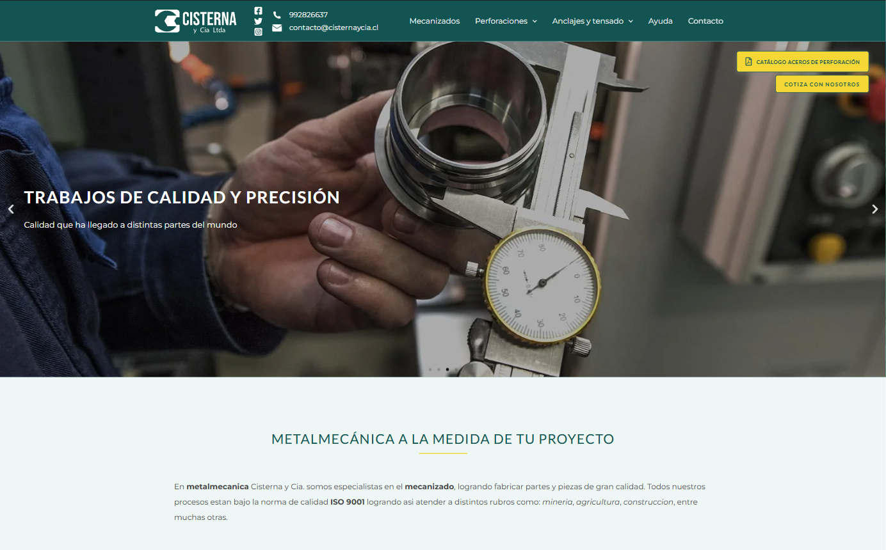

Cisterna y Cía.
Desarrollo Web | WordPress personalizado
Desarrollo y mantenimiento de un sitio web corporativo para una empresa del sector metalmecánico.
Implementación de templates personalizados mediante PHP y Advanced Custom Fields (ACF), integrando contenido dinámico y adaptando las interfaces a las necesidades del proyecto.
WordPress, PHP, ACF, HTML, CSS, JavaScript.
Ver proyecto